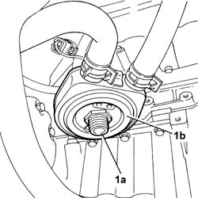
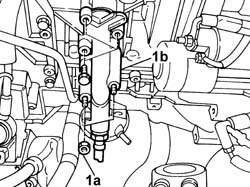

1084B34 CARTRIDGE ENGINE OIL FILTER SUPPORT - R + R
- Path
- Procedures > 10 ENGINE > 1084 ENGINE LUBRICATION > 1084B ENGINE OIL LUBRICATION CIRCUIT > 1084B34 CARTRIDGE ENGINE OIL FILTER SUPPORT - R + R
- Kind
- repair procedure (removal / refitting; the operation number is the code)
- Applies to
- engines: 2.0 16v; all production periods
- Interactive page
- https://sloeber94.github.io/elrnDB-fUlss/en/#/179007161
Applies to: engines: 2.0 16v; all production periods
 Removing
Removing
 Refitting
RefittingOp. 7055B54 UNDER-ENGINE GUARD - R R
Op. 1084B30 ENGINE OIL FILTER R R
1. Undo the fixing pin (1a) and move the engine oil heat exchanger aside.

Applies to: engines: 2.0 16v; all production periods
Lower the vehicle.
Op. 5530B56 BATTERY DRIP TRAY COVER - R.R.
Op. 5010B18 CLIMATE CONTROL UNIT AIR INTAKE - R.R.
Op. 1084B30 ENGINE OIL FILTER R R
Op. 1048A39 SLEEVE FROM AIR CLEANER TO RIGID PIPE - R R
Op. 1048A31 RIGID PIPE CONNECTING AIR CLEANER TO INLET MANIFOLD RIGID PIPE R R
Op. 1056B15 THROTTLE BODY INTERGRAL WITH MDS - R R
Op. 1072B10 INLET MANIFOLD - R + R AND REPLACE SEAL
1. Undo the fixing nuts and bolts (1a) and remove the cartridge engine oil filter mounting (1b).

Applies to: engines: 2.0 16v; all production periods
Refitting
RemovingFit the cartridge engine oil filter support and tighten the fixing bolts.
Op. 1072B10 INLET MANIFOLD - R + R AND REPLACE SEAL
Op. 1056B15 THROTTLE BODY INTERGRAL WITH MDS - R R
Op. 1048A31 RIGID PIPE CONNECTING AIR CLEANER TO INLET MANIFOLD RIGID PIPE R R
Op. 1048A39 SLEEVE FROM AIR CLEANER TO RIGID PIPE - R R
Op. 1048A10 AIR CLEANER FILTERING ELEMENT - REPLACE
Op. 5010B18 CLIMATE CONTROL UNIT AIR INTAKE - R.R.
Op. 5530B56 BATTERY DRIP TRAY COVER - R.R.
Raise the vehicle.
Fit the heat exchanger and tighten the fixing pin to the specified torque.
Value daNm | Fastening | Component | Ø | |
|---|---|---|---|---|
- | 5 | Pin | Heat exchanger fastening | - |
Op. 1084B30 ENGINE OIL FILTER R R
Topics linked from this page (10)
- 0010T10 ENGINE OIL CHECK LEVEL AND TOP UP
- 1048A10 AIR FILTER ASSEMBLY - R.R.
- 1048A31 RIGID PIPE CONNECTING AIR CLEANER TO INLET MANIFOLD RIGID PIPE R R
- 1048A39 SLEEVE FROM AIR CLEANER TO RIGID PIPE - R R
- 1056B15 THROTTLE BODY INTERGRAL WITH MDS - R R
- 1072B10 INLET MANIFOLD - R + R AND REPLACE SEAL
- 1084B30 ENGINE OIL FILTER R R
- 5010B18 CLIMATE CONTROL UNIT AIR INTAKE - R.R.
- 5530B56 BATTERY DRIP TRAY COVER - R.R.
- 7055B54 UNDER-ENGINE GUARD - R R